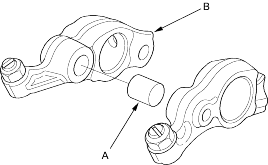
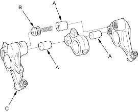
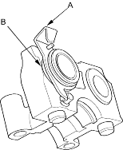

- Inspect the synchronising piston (s) (A) and timing piston (B). Push it manually. If it does not move smoothly, replace the rocker arm assembly.
NOTE:
- When reassembling the primary rocker arm (C), carefully apply air pressure to its oil passage.
- Apply oil to the pistons when reassembling.
D15Y4, D16V2, D16W7, D17A2, D17A5, D17Z3 engines:

D16W8 engine:

- Assemble each timing plate (A) and return spring (B) on its camshaft holder as shown (D16W8 engine).
